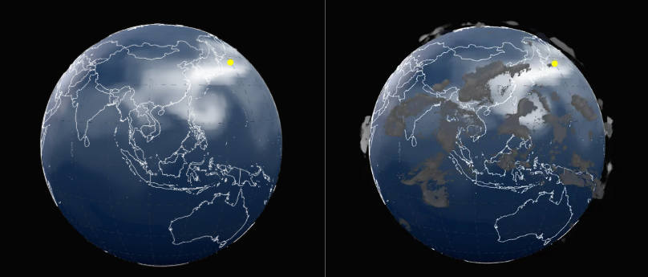
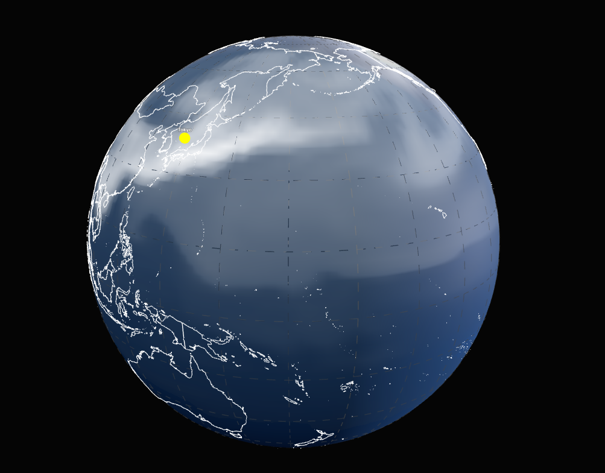
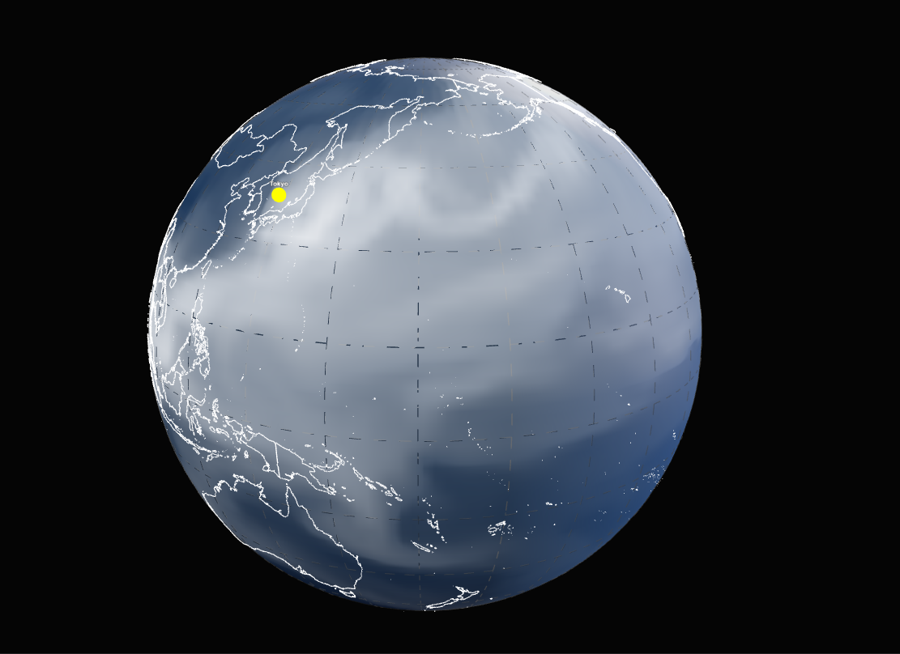

Moisture Commons
A Borderless Journey
Every summer, moisture carried by winds from distant oceans and lands falls as days of rain. It lands on your umbrella, is absorbed into the soil, and lingers as mist over the mountains. But long before you felt it, this moisture had already been on a monumental journey.
Water is the original traveler. A single drop of rain falling in Paris or New York might have evaporated from the Sea of Japan weeks prior, crossing continents, hovering over bays, and riding atmospheric rivers in the sky. Through the Moisture Commons project, we invite you to follow these far-reaching paths and discover the living, sensitive system that connects our globe.
Tracing the Invisible
How do we know where the rain comes from? Developed in collaboration with the Yoshimura Lab (IIS, UTokyo), this simulation relies on the cutting-edge IsoGSM (Global Spectral Model). By tracking isotopic water signatures—variations in the atomic weight of water molecules—scientists can "tag" water evaporating from a specific region, such as Japan, and track its exact trajectory across the Earth.

This allows us to untangle the complex web of the water cycle, proving that local weather is never truly local. It is a composite body, assembled from distant oceans and foreign lands.
Potential and Manifestation
By interacting with the simulation, you can observe two distinct states of this journey. First, the Atmospheric Vapor (PWAT). This is the latent potential of water. It drifts slowly, forming massive, invisible pools and rivers in the sky, carrying the humidity that fuels global weather.

Then, the manifestation: Precipitation. When these warm, humid air masses meet cold fronts or mountain ranges, the potential breaks. The moisture converges, condenses, and falls. What began as a silent drift over the Pacific suddenly becomes a torrential downpour in a distant city.
The Pulse of the Seasons
These flows never arrive the same way twice. The global climate acts as a massive engine, driven by the shifting pulse of the seasons. By comparing our datasets, you can witness the heartbeat of the Earth.
Summer 2017

In Summer, the Asian Continent heats up, pulling in massive monsoonal winds. Intense solar radiation and typhoons push Japanese moisture deep into the Pacific, creating violent but localized cycles of evaporation and heavy rainfall.
Winter 2018

In Winter, the rhythm shifts entirely. The fierce Siberian high-pressure system and the roaring polar jet streams act as a catapult. Moisture is violently stripped from the ocean surface and blasted across the Pacific, reaching North America in a matter of days.
A Shared Climate
Climate change is an urgent global challenge, yet public understanding of these interconnected systems remains limited. Data alone cannot convey how a drought in one hemisphere might be linked to the evaporation cycles of another.
By visualizing the global circulation of water and its shared, public nature, Moisture Commons challenges the geopolitical boundaries we draw on maps. It fosters a collective awareness: the atmosphere belongs to no one, and therefore, to everyone.